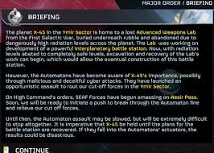
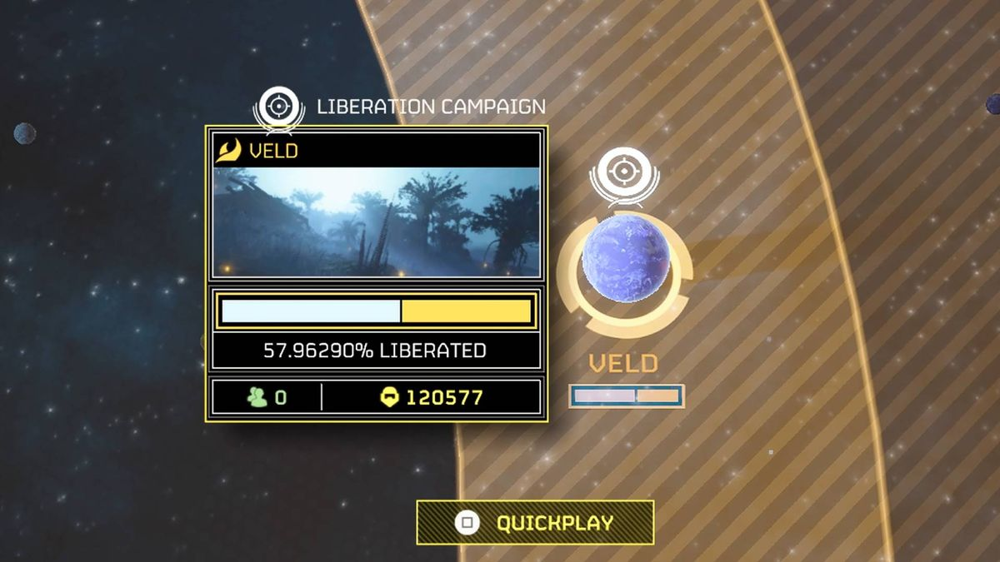

Official Updates for Managed Democracy Deployment Forces
Frontline Briefing
Citizens of Super Earth, your continued courage has once again carried Managed Democracy into the darkest corners of the galaxy.
With the recent return of the Cyborg threat and the continued spread of Automaton and Terminid resistance, Helldivers across the front are reporting intense battles, heroic sacrifices, and an absolutely unreasonable amount of explosions.
High Command reminds all active Divers that survival is encouraged, victory is mandatory, and any accidental orbital strike on friendly positions will be remembered as a spirited contribution to liberty.
Recent Posts

Helldivers continue trench assaults in the name of Super Earth.
Reports from active Helldivers suggest that several operations have begun, ended, and then somehow restarted on planets Divers were sure had already been secured.
Veterans are calling it confusing, rookies are calling it normal, and High Command is calling it a resounding success for bureaucracy.
The latest trench focused warbond has inspired a fresh wave of battlefield experimentation.
Divers are praising the new tools for looking incredible, causing chaos, and turning bug tunnels into open concept floor plans.
Early reviews describe the experience as effective, smoky, and extremely unsafe.

Enemy resistance continues to evolve in deeply unpatriotic ways.
Across the galaxy, Helldivers are reporting brutal resistance, surprise failures, and the familiar sensation that everything was under control roughly ten seconds ago.
Some claim the war has become harsher, others say the enemies are learning, and nearly everyone agrees that extraction is now somehow the most emotional part of every mission.
Dispatches from the Ministry of Truth
This bulletin has been approved for public morale enhancement and combat readiness. All loyal citizens are encouraged to review the latest updates, acquire proper equipment, and pretend they absolutely remember their stratagem inputs under pressure.
Super Earth continues to stand firm against machines, monsters, and whatever fresh mechanical nightmare just crawled out of Cyberstan.
The latest conflict zones are packed with smoke, debris, and the kind of bold heroism that usually gets someone launched into the sky by a badly timed explosion.
Still, our forces endure. Helldivers have held the line through impossible odds, reckless team tactics, and at least one guy who absolutely should not have been trusted with the grenade slot.1
Read the latest field guidance. Super Earth Command reminds all Divers that the difference between panic and strategy is mostly volume and confidence.
Warbond Requisition Priorities
Top Weapons and Items to Buy from the Latest Warbond Release
Item
Priority
Cost
B/FLAM 80 Cremator
High
Premium Warbond Medals
SMG/FLAM 34 Stoker
High
Premium Warbond Medals
A/GM 17 Gas Mortar Sentry
High
Premium Warbond Medals
P 69 Veto
Medium
Premium Warbond Medals
G 48 Giga Grenade
High
Premium Warbond Medals
CPG 48 Sapper Armor
Medium
Premium Warbond Medals
The latest requisition chatter from the front suggests Divers are prioritizing anything that can clear space fast, survive chaos, and make them look like hardened trench veterans while doing it.
Whether your goal is setting the battlefield on fire, gassing a chokepoint, or simply looking authoritative enough that your squad stops asking questions, the newest gear delivers exactly the kind of overkill democracy demands.
Land in hostile territory with confidence that may or may not be deserved
Call in your support gear before remembering the enemy is already behind you
Use every explosive with patriotism and only moderate concern for nearby allies
Complete mission objectives while shouting things that sound heroic
Attempt extraction under conditions best described as spiritually difficult
File a victory report no matter how many reinforcements it took to get there
Top Primaries to Consider
SMG/FLAM 34 Stoker
B/FLAM 80 Cremator
Any weapon that causes enemies to panic before you do
Best Utility Picks
A/GM 17 Gas Mortar Sentry
G 48 Giga Grenade
Extra stims for emotional support
Armor Worth Acquiring
CPG 48 Sapper Armor
Heavy trench armor for Divers who enjoy surviving slightly longer
Fortified armor sets that let you tank explosions with patriotic confidence
Gas resistant armor for anyone planning to deploy questionable battlefield chemistry
Cosmetics That Make You Look Like a Veteran of Managed Democracy
Battle worn capes that flutter dramatically during unnecessary last stands
Dark visors that hide fear, panic, and very poor decision making
Armor coatings that make it seem like you have liberated at least seven planets
Helmet styles that say "I absolutely know the stratagem code" even when you do not
Cyborg Radicals
Half machine, half grievance, and somehow still even uglier in person.
These heavily warped traitors charge into battle like someone gave a welding torch political beliefs.
Cyborg Agitators
Armored zealots with plasma weaponry and all the charm of a screaming microwave.
They are fast, unpleasant, and deeply committed to ruining your day from medium range.
Vox Engine
A giant propaganda machine built to shout treason louder than your squad can shout liberty.
It is basically a tank crossed with a loudspeaker and the result is somehow more offensive than either.
Recommended treatment includes explosives, repeated explosives, and stronger explosives if available.
Terminid Elite Variants
Newer bug mutations continue proving that nature was a mistake left unsupervised.
They run faster, hit harder, and seem personally offended that you brought a mission objective.
Field Observation
Freedom does not ask whether the odds are fair. It asks whether the magazine is full.
From the unofficial but very respected sayings of active Helldivers.
Community Chatter from the Front
Divers are currently talking about rough Major Order outcomes, the pressure of new enemy threats, and how every update somehow makes the galaxy feel bigger, meaner, and a lot less stable.
Some are loving the increased chaos, some are begging squads to focus one planet at a time, and nearly all of them seem united in the belief that whatever just happened was definitely someone else's fault.